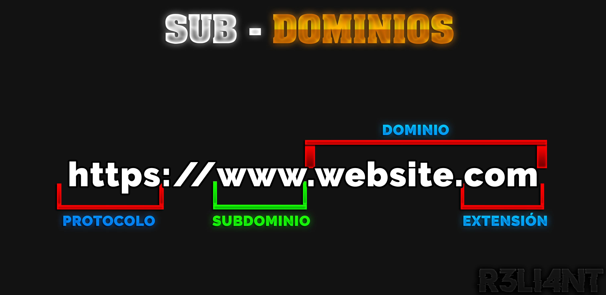

# ¿Qué es un SUB-DOMINIO?
Un subdominio es una subdivisión/subgrupo de un dominio principal lo que permite navegar en diferentes secciones del sitio web, permitiendo así mejorar la navegación del sitio web, el SEO y demás necesidades.
Por ejemplo, supongamos que nuestro sitio web es: https://tienda-software.com
El dominio principal es tienda-software.com y los subdominios pueden ser:
| Subdominios |
|---|
| admin.tienda-software.com |
| clientes.tienda-software.com |
| contacto.tienda-software.com |
| email.tienda-software.com |
| test.tienda-software.com |
| articulos.tienda-software.com |
Gracias a estos subdominios es mucho más dinámico gestionar diferentes secciones del sitio web de manera más independiente.

Hacking Ético
La enumeración de subdominios es una actividad crucial durante la fase de reconocimiento en un pentesting o prueba de penetración. Este proceso implica identificar todos los subdominios asociados con un dominio principal.
Importancia de la Enumeración de Subdominios en Pentesting
-
Detección de Superficies de Ataque:Cada subdominio puede representar una entrada potencial para un atacante. Al descubrir todos los subdominios, los pentesters pueden identificar y evaluar más superficies de ataque. -
Descubrimiento de Servicios Ocultos:Algunos subdominios pueden alojar servicios o aplicaciones menos conocidos, que podrían ser más vulnerables debido a una menor atención en su seguridad. -
Servicios y Aplicaciones Vulnerables:Subdominios pueden estar corriendo aplicaciones o servicios desactualizados o mal configurados, lo que aumenta las posibilidades de encontrar vulnerabilidades explotables. -
Información Sensible:Algunos subdominios pueden alojar páginas de administración, bases de datos o archivos de configuración expuestos, que contienen información sensible.
Ejemplo Práctico
Imagina que estás realizando un pentesting para una empresa con el dominio principal empresa.com. Mediante la enumeración de subdominios, descubres:
| Subdominios |
|---|
| blog.empresa.com |
| tienda.empresa.com |
| admin.empresa.com |
| dev.empresa.com |
Cada uno de estos subdominios podría estar ejecutando servicios diferentes y tener configuraciones de seguridad distintas. El subdominio admin.empresa.com podría exponer una interfaz de administración sin las debidas protecciones, y dev.empresa.com podría tener aplicaciones en desarrollo con vulnerabilidades conocidas.
# Enumerar Subdominios | SUBFINDER
Subfinder es una de las herramientas más efectivas y rápidas para descubrir subdominios, esta programada en lenguaje Go y utiliza fuentes pasivas en línea para su descubrimiento.
Instalar en Debian:
$ sudo apt-get install subfinderDesde Go:
$ go install -v github.com/projectdiscovery/subfinder/v2/cmd/subfinder@latestUna vez instalado, es hora de jugar con él. El siguiente parámetro hará un escaneo básico en busca de subdominios:
$ subfinder -d <DOMINIO>
subfinder -d mercadolibre.com- -d: Especificar dominio.
Para guardar los subdominios en un documento de texto, es tan sencillo como especificarle con el parámetro -o:
$ subfinder -d <DOMINIO> -o subdominios.txt
subfinder -d mercadolibre.com -o subdominios.txtSupongamos que queremos enumerar subdominios pero de diferentes dominios. Para ello, existe el parámetro -dL que permite especificarle un documento de texto que contiene varios dominios.
Y quedaría de la siguiente manera:
$ subfinder -dL <ARCHIVO-DOMINIOS.txt>
EJ: subfinder -dL dominios.txtComenzará a enumerar dominio por dominio.
Subfinder usa varias fuentes pasivas en la enumeraicón, si deseamos excluir cierta fuente:
$ subfinder -es <FUENTE> -d <DOMINIO>
EJ: subfinder -es virustotal.com -d mercadolibre.com# Enumerar Subdominios | SUBLIST3R
Sublist3r es una herramienta basada en el lenguaje de Python, su función u objetivo principal es identificar subdominios existentes que se encuentran bajo un dominio. Enumera dominios usando motores como Google, Yahoo, Bing, Baidu and Ask.
Instalar en Debian:
$ git clone https://github.com/aboul3la/Sublist3r.git
cd Sublist3r
pip install -r requirements.txtAhora, nos queda empezar a hacer las búsquedas de dominio, tan solo agregando el siguiente comando seguido del sitio o dominio al que se analizará:
$ python3 sublist3r.py -d <DOMINIO>
EJ: python3 sublist3r.py -d mercadolibre.comEnumerar subdominios utilizando motores específicos como Google:
$ python3 sublist3r.py -d mercadolibre.com -e Google
python3 sublist3r.py -d <DOMINIO> -e <MOTOR>Guardar los subdominios en un documento de texto:
$ python3 sublist3r.py -d <DOMINIO> -o <ARCHIVO.TXT>
python3 sublist3r.py -d mercadolibre.com -o subdominios.txtSupongamos que tenemos un diccionario específico, con Sublist3r podemos aplicarle fuerza bruta.
$ python3 sublist3r.py -d <DOMINIO> -b <DICCIONARIO.txt>
python3 sublist3r.py -d mercadolibre.com -b /usr/share/wordlists/amass/subdomains-top1mil-20000.txt- -b: Habilitar fuerza bruta.
# Enumerar Subdominios | SUBBRUTE
SubBrute es una herramienta rápida para la enumeración de subdominios por fuerza bruta. Puede ocultar el origen del escaneo usando resolutores abiertos como proxies para evitar límites de velocidad DNS. Además, puede funcionar como un spider de DNS, rastreando registros de manera recursiva, lo que la convierte en una herramienta integral para este tipo de ataques.
Instalar en Debian:
$ git clone https://github.com/TheRook/subbrute
cd subbrute
pyhon3 subbrute.pyEnumerar subdominios:
$ python3 subbrute.py <DOMINIO>
EJ: python3 subbrute.py mercadolibre.comEnumerar Subdominios | AMASS
Amass, desarrollado por Jeff Foley, es una de las herramientas más poderosas para la enumeración de subdominios. Utiliza técnicas como scraping, fuerza bruta recursiva, barrido de DNS inverso y aprendizaje automático para recopilar y acumular grandes cantidades de datos de subdominios.
Instalar en Debian:
$ sudo apt-get install amassEl siguiente comando enumerará los subdominios:
$ amass enum -d <DOMINIO>
EJ: amass enum -d mercadolibre.comAmass puede realizar enumeraciones tanto en modos pasivos como activos.
- Modo Pasivo: El modo pasivo se centra en recopilar información sin interactuar directamente con el objetivo, lo que reduce la posibilidad de ser detectado. Utiliza fuentes públicas y bases de datos disponibles en línea para encontrar subdominios.
Para realizar una enumeración pasiva, puedes usar el siguiente comando:
$ amass enum -passive -d <DOMINIO>- Modo Activo: El modo activo implica interactuar directamente con los servidores del dominio objetivo, realizando consultas DNS, barridos de DNS inverso y otras técnicas que pueden generar tráfico detectable hacia el objetivo.
Para realizar una enumeración activa (que es el modo por defecto), puedes usar el comando básico:
$ amass enum -d <DOMINIO>